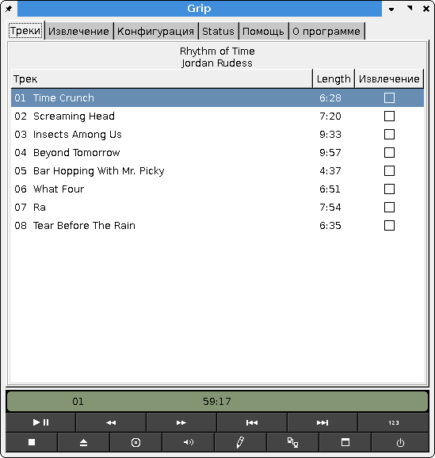
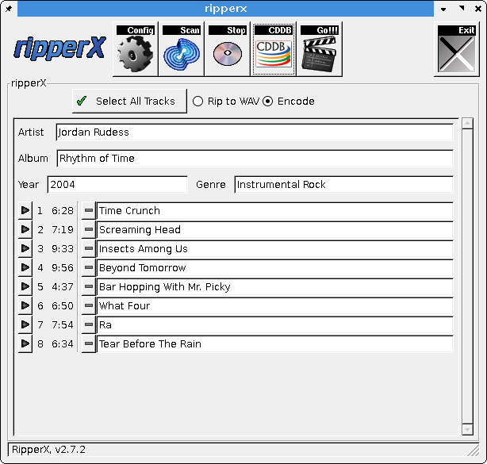
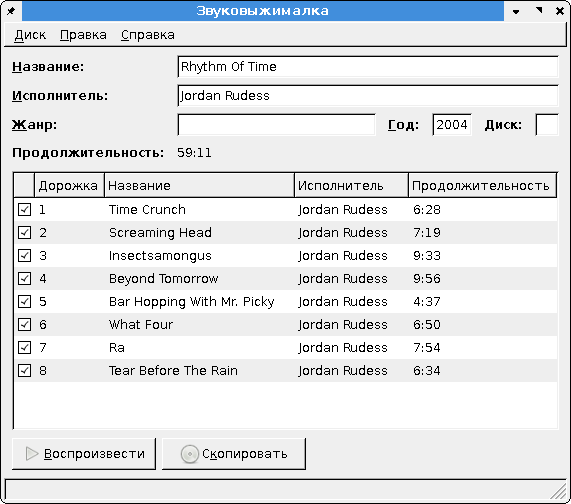
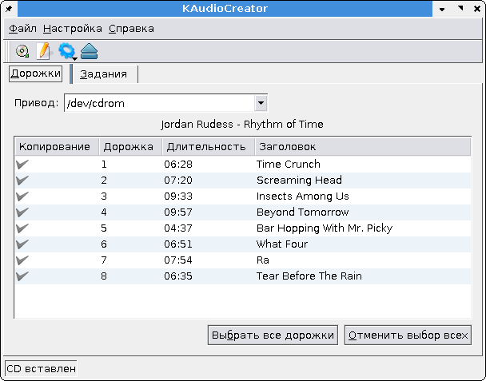
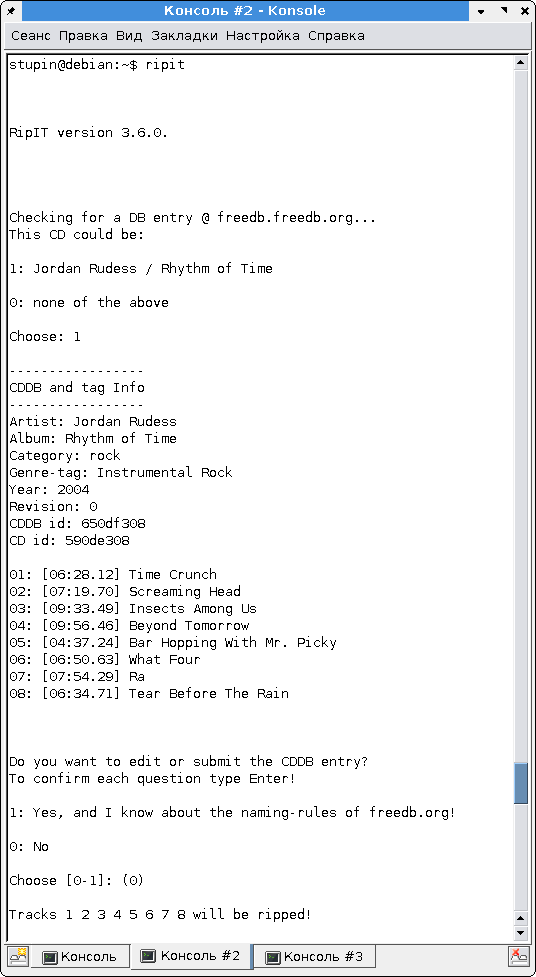

В репозитории Debian нашёл несколько CD-рипперов:
grip - CD-риппер для среды GNOME, имеет интеграцию с некоей базой данных DigitalDJ,
ripperx - лёгкий CD-риппер с GTK-интерфейсом,
sound-juicer - "Звуковыжиматель", довольно тяжёлый CD-риппер для среды GNOME. Интересен тем, что для сжатия использует аудиосистему gstreamer,
KAudioCreator - CD-риппер для среды KDE,
ripit - консольный CD-риппер, представляет собой Perl-скрипт.
Все программы, за исключением sound-juicer являются обёртками вокруг консольных программ вроде cdparanoia для снятия треков, и lame/oggenc для кодирования. При наличии доступа к Интернет программы подключаются к базе CDDB и автоматически проставляют теги, если диск был найден в базе. Можно отредактировать теги вручную, задать место расположения готовых файлов, задать способ их наименования с использованием содержимого тегов, выбрать и настроить энкодер на требуемое качество сжатия.
Ripper X не понравился тем, что не русифицирован. Английский интерфейс для меня проблемы не представляет, но зачем нарушать русскоязычную программную среду чужеродным элементом? :-)
В интерфейсе Grip не удалось найти настройки битрейта, зато они легко обнаружились в тектовом конфиге ~/.grip.
Sound Juicer вообще не богат настройками, можно выбрать только кодер и схему сжатия вроде "CD-качество", "Речь" и т.п. Нашёл XML-файл с настройками, правда нужных мне параметров там не обнаружилось. Вытягивать из программы необходимые настройки щипцами мне не очень интересно, поэтому мой выбор склонился в пользу других, лучше документированных программ. В общем чувствуется спорный подход среды GNOME к проектированию интерфейсов: прятать детали настройки с глаз долой в XML-файлы, которые плохо документированы - чем не реестр Windows? Для тех же кто не разбирается в настройках аудиокодеров вполне подойдёт.
KAudioCreator по свойствам в целом очень похож на Grip, только ориентирован на среду KDE. Из плюсов по сравнению с Grip можно отметить специальный мастер для формирования имён файлов по содержимому тегов, в Grip на этот счёт имеется страница в англоязычном файле справки.
Теперь о самой любопытной программе: ripit. Программа интересна прежде всего тем, что нисколько не уступая по возможностям и удобству остальным программам, обладает рядом довольно интересных возможностей. Во-первых она может работать в связке с довольно приличным набором рипперов и кодеров. Во-вторых, он позволяет указать количество ядер процессора, по которому будет определяться число одновременно работающих процессов-энкодеров. В-третьих, он позволяет использовать для энкодирования другие сетевые компьютеры доступные по ssh! Эта возможность мне лично кажется избыточной, поскольку современные компьютеры сжимают звук настолько быстро, что больше времени уходит на собственно считывание дорожек с компакт-диска.
Что выбирать? Ответить однозначно затрудняюсь.
Если вы простой пользователь, ничего не понимающий в тегах, кодерах, битрейтах, смело выбирайте Sound Juicer.
Если вы предпочитаете графический интерфейс, выбирайте Ripper X если вы пользуетесь каким либо Window Manager'ом, выбирайте Grip если вы пользователь GNOME, выбирайте KAudioCreator если вы используете KDE.
Если вы предпочитаете командную строку и текстовый интерфейс вас нисколько не пугает - смело выбирайте ripit. Несмотря на отсутствие графического или ncurses-интерфейса, пользоваться ею пожалуй даже удобнее, чем остальными программами.